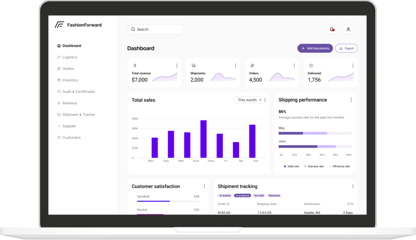
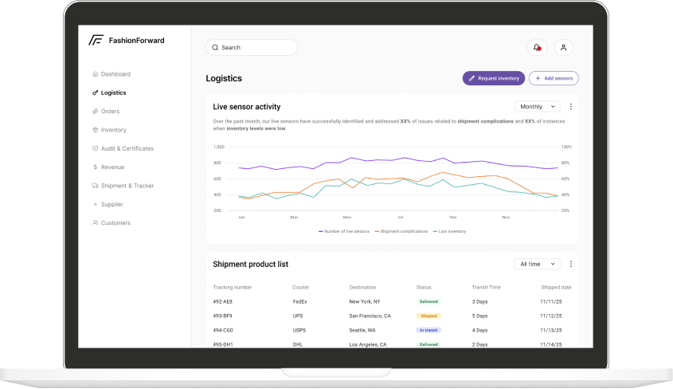
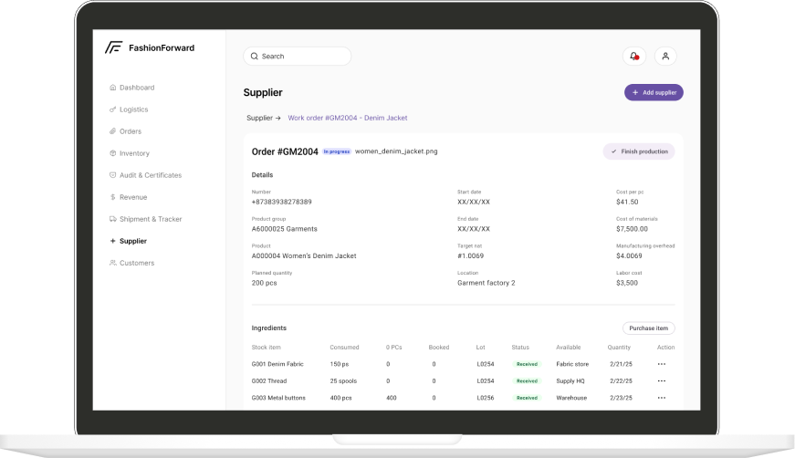
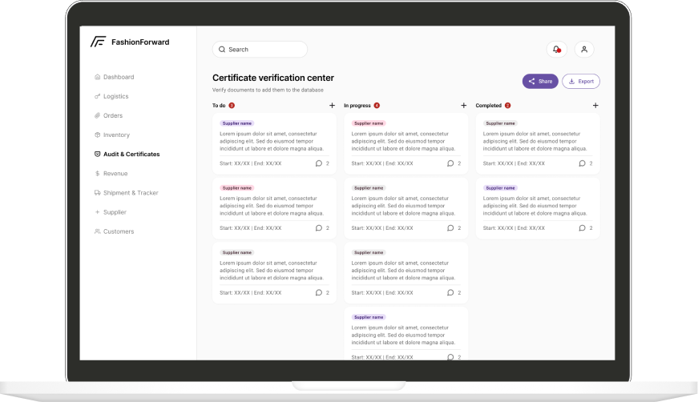

Designing transparent, zero-waste supply chain management for FashionForward — replacing fragmented manual systems with a centralized dashboard that gives managers total visibility and control.
FashionForward is a sustainable apparel brand dedicated to minimizing its environmental footprint by reducing textile waste sent to landfills. Despite their mission, they were operating with fragmented, manual systems — causing tracking errors, slow audits, and a lack of real-time visibility across their global supply chain.
Analysts were spending 60% of their time on manual data cleaning. Tracing a single product took up to three weeks.
Communication silos, lack of real-time visibility, data inconsistencies, and no centralized platform for supplier performance were creating cascading operational failures across a 25-country network.
Consolidate all disparate data sources into a single warehouse. Automate data ingestion to ensure real-time accuracy. Design dedicated views for live shipment tracking and instant compliance report generation — turning weeks of work into seconds.
| Role | Primary Need | Pain Point Addressed |
|---|---|---|
| Logistics Coordinator | Real-time shipment visibility and route alerts | Inability to monitor live shipment status across 25 countries |
| Supply Chain Analyst | Automated compliance reporting and data validation | 60% of time spent on manual data cleaning and reconciliation |
| Supplier Relations Manager | Centralized onboarding and performance portal | Fragmented communication with 200+ global suppliers |
| Sustainability Officer | Automated sustainability metrics and audit trails | Manual tracing of materials for ESG compliance reports |
| Chief Technology Officer | Scalable, secure microservices architecture | Legacy systems unable to handle cross-border data at scale |
Data silos cause cascading delays. Fragmented ERP, supplier, and logistics systems meant no single source of truth — every handoff introduced errors and lag time.
Auditing is manual and reactive. Compliance teams were assembling reports by hand from disconnected documents, making sustainability audits a weeks-long process instead of an instant pull.
Global teams lack shared context. Without a unified dashboard, cross-functional teams (logistics, procurement, sustainability) made decisions from different data snapshots, leading to misaligned priorities.
Supplier onboarding is a bottleneck. No centralized supplier portal meant onboarding was slow and inconsistent, creating gaps in certification tracking and performance monitoring.
The final product combines the hero dashboard with logistics, supplier, and audit views to deliver a complete, scalable Supply Chain Toolkit.



